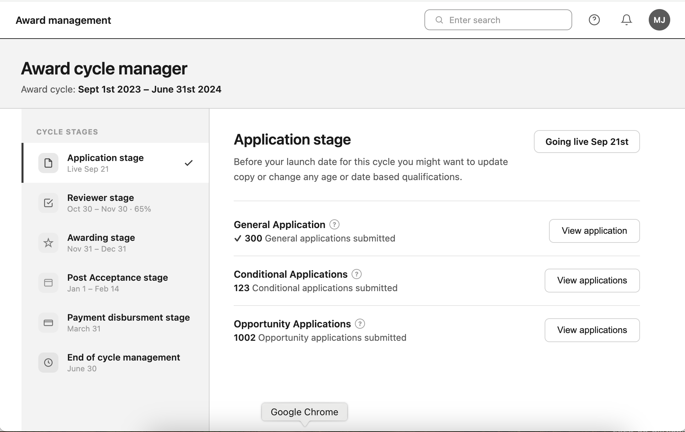
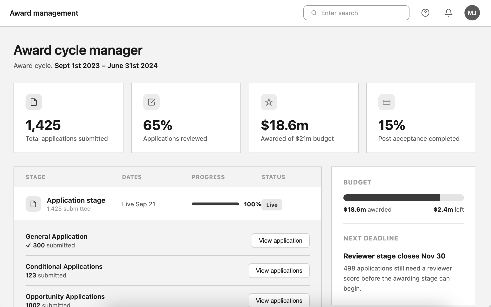
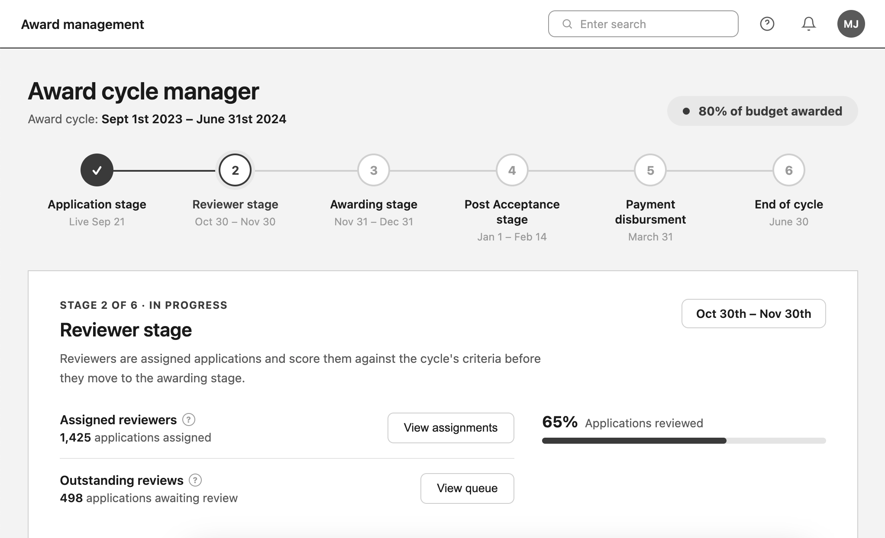

In 2022, Award Management faced a recurring churn problem. My lead tasked me with building a solution to offload the heavy training burden from admins. The catch? I couldn't touch existing pages or request database work from our overextended back-end team.
Admins were bogged down by scholarship managers needing annual retraining. Interviews revealed the app was built like a blank Excel sheet: powerful, but only if you were an expert.
Our experience was cluttered and confusing. Usability tests showed a dashboard packed with 35 links (20 of which saw less than 0.1% of total clicks) while critical workflows remained buried three levels deep.
"I just want to log in and be shown what my tasks are, when they're due, and where I need to go... Just hold my hand."
Junior college scholarship admin
If 80% of colleges follow the same steps, we could replace the cluttered layout with the Award Cycle Manager: a sequential 6-stage workflow providing automated guidance and progress tracking.
After talking with users and premium support, we determined a list of things that were important to our scholarship admins:
- All the stages of the award cycle.
- The current awarding budget for this award cycle: what has been spent and what is left to award.
- Information about what scholarships they are responsible for and where in the cycle they are.
- How much time is left in this cycle.
- Each step has a link that takes them directly to the task page.

Using the split view design system component to give users a vertical set of steps, showing what's left in the award cycle tasks assigned to them.
"I like how simple it is to see how many tasks and steps I have left to complete."

Break out each stage into a container that shows all the steps within that stage once it has been expanded.
"It's helpful seeing the awarding cycle info at different levels all at once, from the total amount we have to award to how many scholarships are left to make decisions on."

Give the user the ability to quickly view all the tasks within a cycle, and make the UI look more modern.
"It looked different, but made it hard to see two bits of info from different stages at the same time."
We determined that the feedback we got from users when we showed them the designs was good for solving UI issues, but it was still hard to tell if this solution would resonate with them. So we set up an EAP for 3 months during an awarding cycle. If scholarship admins used it consistently and clicked on links to get where they needed to go, then that was a good sign.
We piloted the solution with 17 schools over a 3-month period during the award cycle, conducting follow-up interviews to gauge impact.

We took the feedback from users and went with the vertical accordion design, because it did a good job of displaying all the relevant information an admin would need while also condensing down to a single stage at a time. It was seen as a bonus that two stages and their steps could be viewed at once, something the other two designs did not allow for.
Decreased support requests and higher task completion rates without manual admin intervention.
Initially, admins needed guidance on the new dashboard. We also learned users preferred seeing only their tasks; filtering the UI to show individual responsibilities significantly reduced cognitive load.
To address the onboarding issue we created a large call to action on the existing homepage and a short introduction video explaining the goals and functions of the page.
We saw a shift toward self-sufficiency. Admins stopped relying on training workshops and began using the dashboard proactively, often setting it as their home screen.
The result: a measurable drop in support requests. While these metrics are anecdotal, over the next fiscal year churn dropped by 17%, allowing us to meet our churn rate goal. The intuitive design gave the team fresh confidence to upsell the platform across other departments.